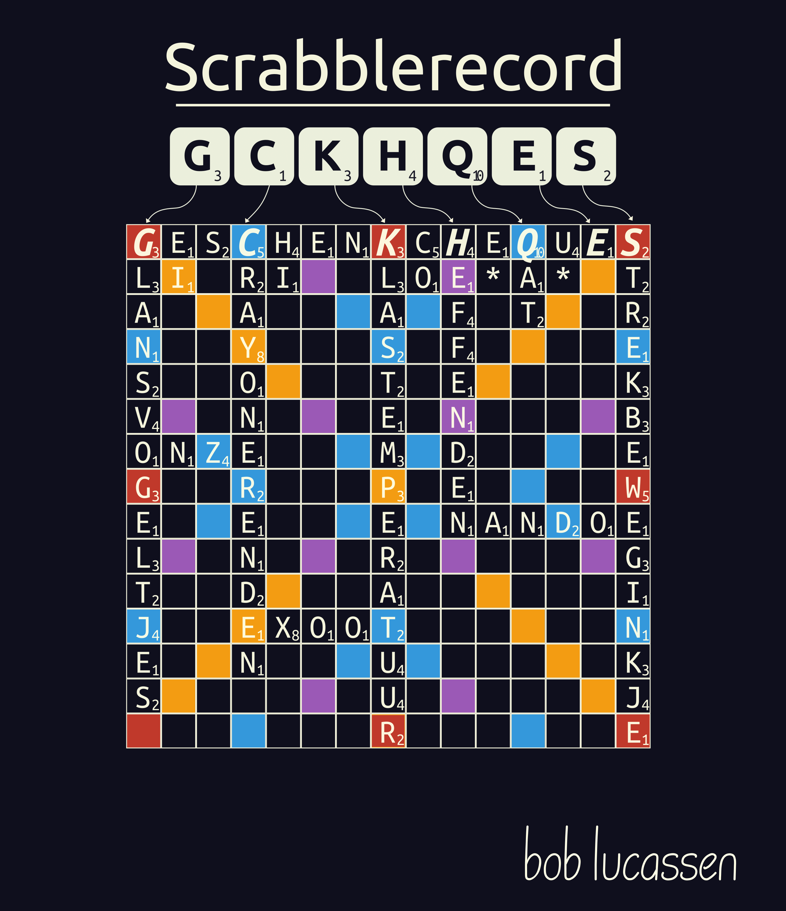
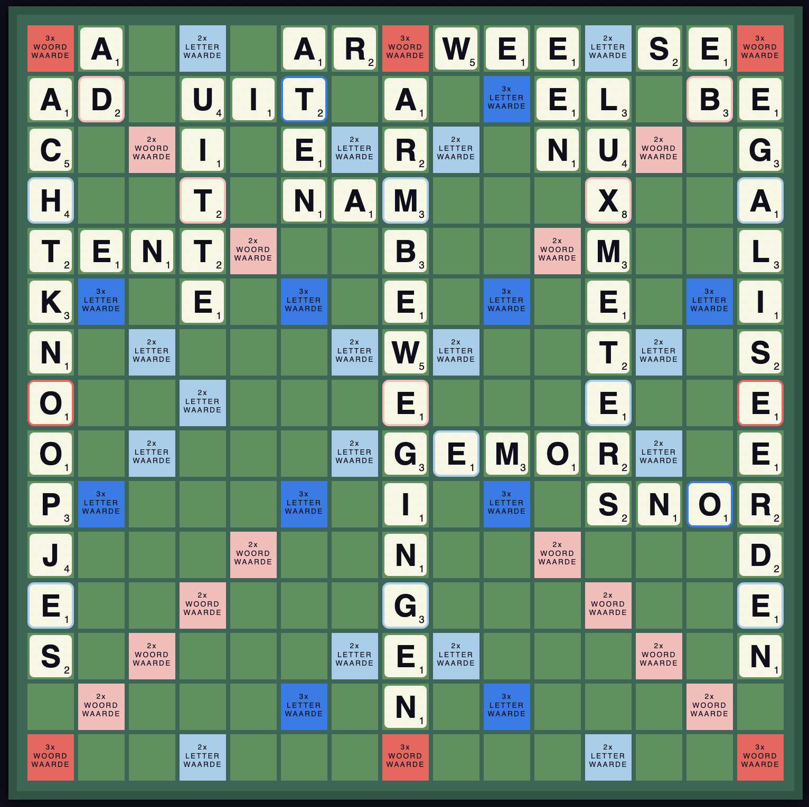
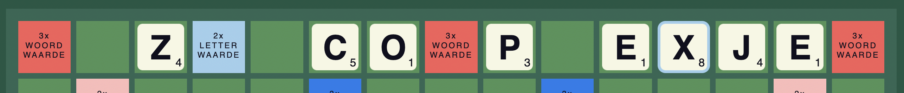
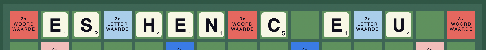
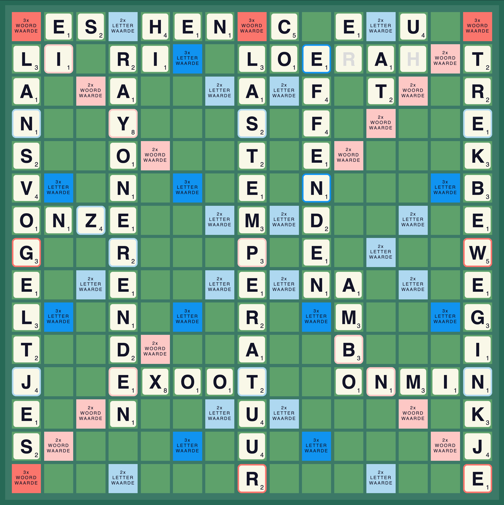

Er zijn weinig dingen waaraan ik me zo erger als mensen die bij het gebruik van een uitzonderlijk lang woord zeggen “Zo, dat is een goed scrabblewoord!”. Je hebt maar zeven tegels op je bordje Pieter-Jan, hoe vaak denk je dat je “contraproductief” kan leggen op een bord van 15 vakjes breed?
Maar wat is daadwerkelijk het hoogst scorende woord?
Als je alleen naar de letterwaardes op de tegels kijkt is het antwoord cultuurchequeje (54). Daarvoor moet cultuur en je al op het bord liggen zodat je cheque er mooi tussen kan schuiven. Verstandiger is echter om terug te vallen op een klassieke scrabble techniek: het gebruiken van de woordwaardeverdriedubbelaars. Met een 15-letterwoord (en acht letters al op de juiste plek) kun je in het beste geval met één woord drie van dat soort velden pakken. Je woord is dan 27 keer zijn waarde waard. Daarnaast heeft die locatie ook nog eens 2 letterwaardeverdubbelaars. De letters op deze tegel gaan keer 2, keer 3, keer 3, keer 3 en zijn dus 54 keer meer waard. Dat tikt wel aan!
Hoewel de bovenstaande tactiek al een onbeschofte actie is tegen je schoonfamilie, heb je voor slechts één woord punten gehaald. De scrabblekenners weten dat je door de juiste letters aan te leggen voor meerdere woorden punten kan binnenslepen. Dan heb je natuurlijk wel een bord nodig waarop dat kan. En hier begint de sport: hoe moet het bord eruit zien, zodat je in één beurt het maximale aantal punten kunt halen? Hier een voorbeeld van gewaardeerde collega Aad van de Wetering.

De letters op je bordje zijn CDFJLUQ. Dat lijkt hopeloos. Maar schijn bedriegt, je kunt daarmee op de bovenste rij het woord JACQUARDWEEFSEL leggen. Dit levert niet alleen x27 voor het woord op (alle 3x woordewaardevelden worden pas in deze beurt gebruikt) maar ook daarbovenop nog x2 voor de al goed scorende Q en F. Prachtig! Daarnaast maak je ook nog een hele reeks aan nieuwe verticale woorden. Waarbij de 3 lange ook nog eens nogmaals x3 punten zijn. Alleen rekenwonders denken nu, wow! 1985 punten! De rest rekent het uit op een bierviltje.
[tabel uit het boek]
*dit is de bonus die je krijgt als je alle letters op je bordje in één beurt speelt
Dit vergt wel een heel bijzonder bord. Met verticale woorden waar je een letter voor kunt plaatsen, waardoor het soms een heel ander woord wordt. Zo wordt RUGPROBLEMEN DRUGPROBLEMEN en wordt UITTE QUITTE, enzovoorts. En natuurlijk moeten er al 8 letters uit het woord JACQUARDWEEFSEL liggen. Die letters moeten deel uitmaken van valide woorden én niet op de letter- of woordverdubbelaars liggen. Zoals je misschien al aanvoelt, de kans dat je dit in de praktijk gaat tegen komen is klein. De charme is dan ook niet hoe je je schoonmoeder kunt verslaan, maar de schone kunst van optimalisatie. # Het hoofdwoord
Het beste woord dat je kunt leggen is een 15-letterwoord woord op de bovenste rij. Het moet een 15-letterwoord zijn, om drie keer de 3x woordwaarde mee te kunnen pakken. Het totale puntenaantal van dit woord is belangrijk, maar welke letters er op de dubbel-letterwaarde terechtkomen maakt een groter verschil. De woorden die je verticaal kan maken tellen ‘maar’ drie keer mee, dus die zijn mooi mee genomen, maar ga je de wedstrijd niet mee winnen.
Nu hoor ik je denken, dan moet enzymcomplexjes het beste woord zijn! Puntenknallers X en Y vallen precies op de dubbelletterwaardes, dus dat levert 1778 punten op, nog zonder verticale woorden. Maar bedenk je wel dat je maar zeven steentjes neer kan leggen, en er dus 15-7=8 steentjes al op het bord moeten liggen in valide formatie. En dan is alleen deze situatie valide:

Je ziet, ik kan niet acht letters selecteren uit enzymcomplexjes zonder één van de kritieke puntenvlakken te bedekken. Tenzij “ple” of “mco” een woord wordt, dan kan het wel. Zo gaan ettelijke punten verloren.
Een beter woord is daarom geschenkscheques. Potentieel (slechts) 1748 punten, maar wel passend te krijgen. Onder andere op deze manier. En deze manier is het beste. Waarom? Dat moet je nog even van me aannemen.

Het is vanaf hier niet moeilijk om, met enig puzzelen, bij een woord als citytripcheques te geraken. Nog meer punten! Maar helaas. Deze staat niet in DE LIJST.
Voordat je daadwerkelijk recordbrekende woorden gaat selecteren moeten je eerst een ander probleem oplossen, bekend bij iedere scrabble-speler en verantwoordelijk voor menig echtscheiding. Welke woorden mogen nou eigenlijk op het bord blijven liggen? Gelukkig bestaat de Scrabblebond Nederland (de afkorting voor Nederlandse Scrabblebond was bezet), die over deze kwestie een gezaghebbend oordeel uitspreekt.
De SBNL maakte altijd gebruik van de dikke van Dale. MaarnNa een dispuut betreffende het woord fietsbel (niet in het woordenboek te vinden) ontstond voldoende ophef om de stringente richtlijnen op te rekken en ook enkele samenstellingen die niet in het woordenboek staan toe te laten op ‘de lijst’. Deze fietsbelbevattende woordenlijst wordt elk jaar opnieuw bijgesteld en bevindt zich enkel in versleutelde vorm in de officiële wedstrijd software en op de computers van de verantwoordelijke woordenlijstsamenstellers.
Dat doet me denken aan de huidige recordhouder voor meest-scorende-zet: Floris Ouwerkerk. De vooralsnog onbetwiste beste scrabble speler in de Nederlandse taal. Floris draagt ook bij aan het samenstellen van de woordenlijst. Toegang tot het relevante woordenboek is een praktisch voordeel bij de jacht op een (nieuw) record.
Stap één in je reis om het record te breken is dus toegang verkrijgen tot de woordenlijst. Anders kun je je resultaten niet eens toetsen. Ik heb het bestuur van de Scrabblebond gevraagd, en de samenstellers van de lijst, en de maker van de wedstrijdsoftware. Maar de lijst blijft wegens copyright bij de heer van Dale geheim. Het Plan B: koop de wedstrijdsoftware. Specifiek: DUPLOMAAT, prachtig scrabblegereedschap gemaakt door Luc Kumps.
DUPLOMAAT stelt je in staat om te controleren of een woord volgens de lijst valide is. Één voor één dus. Ik heb het alvast gecheckt, citytripcheques mag niet. En twintig andere samenstellingen met cheques ook niet. Menig woord dat start met baby is ook niet valide. Enzymen zijn ook te specifiek ben ik bang. Volgens DUPLOMAAT zijn de meeste woorden die eindigen op complexjes ook zelf verzonnen. Ik heb in weinig situaties in mijn leven een fatsoenlijke zoekfunctie zó gemist.
[title=De plek,reference=de-plek]
Geschenkcheques blijft voorlopig het beste woord. We kunnen kiezen om geschenkscheques horizontaal boven (dit is praktisch hetzelfde als links verticaal) of horizontaal onder (hetzelfde als rechts verticaal) te plaatsen. Als je hem boven aan het bord plaatst hebben we woorden nodig waar een letter voor kan worden gelegd. En onder moet er een letter achter geplaatst kunnen worden.
De reden waarom bijna iedereen voor boven kiest is omdat veel letters anders bijna geen oplossingen hebben. Neem bijvoorbeeld de K in het midden van geschenkcheques. Je denkt aan woorden als koffer-offer, kleuter-leuter, klas-las of kwezel-wezel. Het woord langer maken is een makkie: de Nederlandse taal kent veel lange achtervoegsels heeft die achter nagenoeg elk woord mogen, zoals achtigere. Kleuterachtigere, bijvoorbeeld. Sprokkelen maar, die puntjes! Met de k aan het einde wordt het lastiger. Zwilk is het enige woord dat volgens de officiële lijst mag. Zwilk langer maken (aan de voorzijde) wordt ook lastig, in het Nederlands zijn veel minder algemeen toepasbare voor- dan achtervoegsels. Je concludeert dat je geschenkcheques inderdaad graag boven (of links) legt.
[title=De pilaren,reference=de-pilaren]
Nu moet je op zoek naar goede woorden die verticaal veel punten kunnen opleveren. Deze woorden noem je ook wel ‘woordpilaren’. Deze bouw je het liefst op plekken waar je nog een driedubbele woordwaarde mee kan pakken. In geschenkcheques is dat bij de G, K en S. Let op! Deze woorden moeten zonder de eerste letter ook valide zijn!
De beste woorden zijn: 123 (g)lazuurkleurtje, 138 (k)luchtschrijver, 129 (s)maakcurriculum (een luchtschrijver is zo'n piloot die een tekst schrijft in de lucht).
Deze, in mijn mening, prachtige woorden zitten natuurlijk niet in de officiële woordenlijst. Rekening houdend met de Scrabblebijbel zijn dit de beste opties: 108 (g)rauwachtigers, 120 (k)luchtigheidjes, 105 (s)tuurtouwtjes
En dat brengt je naar het volgende probleem, De H's zijn op! In een normaal Scrabblespel zitten maar 2 H's, en we gebruiken er al 2 in geschenkcheques. De bovenstaande opties bevatten 3 extra H's. Dat gaat zelfs met blanco's niet lukken. ## Optimalisatie De juiste woordpilaren vinden blijkt geen sinecure. Er komt wiskunde aan te pas om de optimale combinatie te vinden. Het kan dus ook best zijn dat er een ander woord is dan geschenkcheques die misschien zelf minder punten oplevert, maar door betere mogelijkheden tot woordpilaren toch meer waard is. Voor het gemak beperk je je voor nu tot het optimaliseren van woordpilaren voor geschenkcheques. Dat is namelijk al moeilijk genoeg.
Er moet een optimum gevonden worden met de volgende restricties: - Je mag alleen de 102 steentjes die in Scrabble beschikbaar zijn gebruiken. Is een letter op? Dan kun je geen woorden meer maken met deze letter. Praktisch heb je maar 101 letters, de tegenstander moet immers nog een letter op zijn bordje hebben, anders is het spel al voorbij. Gelukkig mag je wel kiezen welke letter de tegenstander krijgt. - Elk woord moet daadwerkelijk legbaar zijn (woorden langer dan de 7 letters die je per beurt beschikbaar hebt moeten in meerdere beurten worden gelegd, waarbij in alle beurten een valide woord gelegd wordt). - Het moet binnen het maximaal toegestane aantal beurten. - De woordpilaren zijn op zichzelf én met de toegevoegde letter van het recordwoord valide.
Moeilijkheden: - Elk woord moet aan een ander woord worden gelegd. Dat betekent dat alle woorden aan elkaar verbonden zijn. Welk woord je neerlegt bepaalt hoe je woorden aan elkaar kunt verbinden. Je kunt niet zomaar beginnen en hopen dat het goed komt, dan komt het namelijk niet goed. - Waar je de blanco gebruikt maakt veel uit. Liever niet in de woordpilaren, zou je denken, maar misschien levert dat netto meer punten op. - Als je de woordpilaren in kolommen naast elkaar legt, moeten ook de pilaren horizontaal weer allemaal valide woorden zijn. Als je daar extra letters voor nodig hebt, kruisen ze misschien met een derde kolom.
Met dit recept voor hoofdpijn ga je op zoek naar de set verticale woorden die het puntenaantal maximaliseert.
Elk mogelijk woord heeft de score die deze direct opbrengt (de ondergrens) en een maximale score (wat als we alle overige letters er precies handig onder zouden kunnen hangen). De ondergrens van geschenkcheques is 1724, dat is het aantal punten dat je krijgt als je het woord op de juiste plek op het bord legt. Als je alle lettercombinaties die bestaan als woordpilaar mag gebruiken, dus ook combinaties die wartaal zijn, kun je maximaal 2193 punten behalen. Dan heb je de beste letters op de 3x woordwaarde plekken, de op een na beste letters op de 2x letterwaarde plekken, enzovoort.
Onzinnig, zou je denken. Want dat levert geen valide punten op. Nee, maar wel informatie. Door voor potentiële recordwoorden hun ondergrens en bovengrens uit te rekenen, kun je ineens wél iets zeggen over de kwaliteit van geschenkcheques als recordwoord. Er zijn namelijk maar een handjevol woorden die überhaupt in het bereik komen van boven de 1724 punten als ondergrens.
Je kunt dus best tevreden zijn met geschenkcheques, en met gerust hart verder puzzelen.
De belangrijkste woordpilaren zijn natuurlijk de 3 woorden die onder de x3 tegels terecht komen. Ook hier kun je een onder en bovengrens bepalen door naar de overgebleven steentjes te kijken. Je zoekt door totdat de ondergrens van de beste oplossing hoger is dan de bovengrens van alle overige opties.

Je hebt GCKHQES op je bordje en legt GESCHENKSCHEQUES.
[tabel uit het boek]
Weet je nog dat je erop moest vertrouwen dat de onderstaande startpositie van je record er zo uit ziet?
En dat is zowaar een nieuw record! Feest! Al mocht het niet lang duren want een maand later had Floris mijn record weer teruggepakt, hij heeft namelijk gespot dat onder de C het woord CAMMEN past! Wat een modern woord! Zo modern, dat deze alleen in een nieuwere lijst voorkwam. Ik had helaas de optie op twee parallelle kolommen te proberen te vroeg afgeschoten, en dat komt me nu duur te staan. Met CAMMEN heeft Floris 8 puntjes meer, 2100 dus.
Dus dan de vraag, kan je nu meer dan 2100 punten vinden? Ik denk het eigenlijk niet. Maar hoe ga je dat nu sluitend bewijzen?
[title=Wiskunde en computerkracht,reference=wiskunde-en-computerkracht]
Hard bewijzen welke zet het meeste punten oplevert is conceptueel simpel genoeg. Vat het complete spel scrabble in één grote formule. Los nu de formule op met brute computerkracht. En dat is precies wat ik heb gedaan. Het teleurstellende antwoord is dat 2100 punten met de huidige woordenlijst optimaal is, het kan zijn dat ik nog een foutje in m'n programmering heb natuurlijk, maar ik kan het record netjes reproduceren en geen punt meer.
Wel fijn is dat we nu voor elke woordenlijst het optimum kunnen bepalen. Dus wat is de maximale zetscore als alle woordenboekwoorden mogen? niet alleen, de lijst, het SWL. En dan zijn er maar liefst 2245 punten mogelijk! Toch nog een kleine troost voor mijn gefrustreerde ego.
TODO: dit scriptje moet nog draaien, dan ook mooi plaatje
_ I T _ T R I _ C _ E _ U _ _ L A A S L O E R A H T U N A K F A X * U B E E K A O L B G G P E V E V R O E O T R E N E W E E R J M M E I I S N G K S J T E E
plankje: CYPHQES
[tabel uit het boek]
Ja foutje! Maar enkel visueel inderdaad. En dankjewel :).
Voor deze beurt niet, want de E waaronder die L van RIL komt te staat ligt er al. Dus je krijgt geen punten voor het maken van een nieuw (vertikaal) woord zoals bij AT, waarbij het nieuwe woord QAT maakt.
Crayonerenden is niet hetzelfde als crayoneerden. Net zoals opereerde niet hetzelfde is opererenden. Dat kan gewoon.
En wat betreft bronnen online kan ik je in ieder geval linken naar deze 2 referenties: Modern Woordenboek: https://www.ensie.nl/jozef-verschueren/crayoneren Oosthoek Encyclopedie: https://www.ensie.nl/oosthoek/crayoneren Maar ook gewoon in: https://www.scrabblewoordenboek.nl/woorden/Crayonerenden
Belangrijker is dat het in de officiele lijst staat, als je een programma als DUPLOMAAT pakt (of een ander programma erkend door de scrabblebond) dan kun je dit woord gewoon neerleggen.
En de van Dale heeft hem wel in de volledige uitvoering hoor (editie 14), maar niet online, daar staat maar een subset.
Wordfeud gebruikt een andere woordenlijst, volgens mij niet zomaar beschikbaar. Wellicht mag je daar wel CITYTRIPCHEQUES leggen!
Uhhh, circusmeidsquat is heel veel punten?
Een LANSVOGEL is een woord in de Dikke Van Dale.
Maar hier een artikeltje ;), het is sowieso een super obscure naam voor deze vogel: https://www.dbnl.org/tekst/\_vla010187201\_01/\_vla010187201\_01\_0068.php
Je hoort beweging niet zo vaak in de verkleining nee, maar misschien dat een woord als kettinkje de intuitie bevorderd? Dat is namelijk duidelijk niet kettingkje, en een heel veel voorkomend verkleinwoordje eindigend op -ing
Jouw naam ken ik, en dat hoeft dus niet meer ;).
Ja! eens, leuk dankjewel! Nu ga ik eens goed kijken waar in het process ik had aangenomen dat ik die E moest leggen en niet de U.
EDIT: En ik ben weer dubbel-scheef aan het kijken, de punten van die U krijg je sowieso. Je krijgt immers alle punten van een woord of je nou de tegels hebt gelegd of niet.
Onder aan deze pagina staat de 2 en 3 letterwoorden (en wat uitleg over waarom ik niet de hele lijst kan delen...) https://www.scrabblebond.nl/taal.htm
En deze website is verouderd maar komt wel 99% overeen als je woorden wilt controleren https://www.scrabblewoordenboek.nl/
Als je gewoon een goede woordenlijst wilt voor ge-automatiseerd dingen vinden kun je kijken in https://discord.gg/CHctMCrY3g
Om even te voorkomen dat ik op je edits reageer met m'n eigen edits. Ik zal nog eens even goed kijken of ik dit passend kan krijgen binnen de officiele woordenlijst en beschikbare tegels (die zijn ook schaars dus er moet wat gaan schuiven)! Dank voor de suggestie :), ik dacht dat ik alle opties wel goed had afgedekt, maar ik zie de ruimte die je ziet :)
Dat klopt! En natuurlijk liever in dit woord dan één van de scorende
Loerah, Javaans dorpshoofd. En dat kan niet helemaal omdat de de U van UH er al moet liggen als je geschenkcheques legt. En die moet verbonden zijn!
Hahaha, hoe het meestal gaat is dat ik 30m nadenk over wat de 100% maximale score is elke beurt. Dus nu spelen we met schaakklok. Dat trek ik overigens bijna niet ;).
Ik was nieuwsgierig of het ook zonder weginkje kon, want zo schoon is die niet. En dat kan:
Naast de laatste N van HEFFENDEN leggen we AMBO verticaal en ONMIN horizontaal. En dan kunnen we het woord opbouwen als volgt: INKJE BEWEGINKJE TREKBEWEGINKJE. Dat kan nog net met de overgebleven letters :)
Zie de uitleg hier: https://www.reddit.com/r/thenetherlands/comments/13fchse/comment/jjuaj4g/ !
NANDOE ligt er al. Dan leg ik weginkje en dan het hele woord.
Ja! En er zijn meer 7 tegeltjes over zodat je het ook in een normaal potje kan spelen (in plaats van alleen in solitaire, waarbij je alle tegeltjes kan gebruiken).
Ja -6, (G=3, -9 want in een x3 woord, en dan +3 in hexogeen) niet een heel groot probleem, dit is volgens mij met een marge van 300 punten de hoogste scrabblescore in welke taal dan ook namelijk (al is dat heel moeilijk zoeken!)
Helemaal correct, dat moet gewoon kje zijn, en de G in hexogeen moet geen blanko zijn in ruil. Soms kun je domme fouten maken zeg!
Ja je hebt gelijk! Zie, https://www.reddit.com/r/thenetherlands/comments/13fchse/comment/jjugqbm/?utm_source=share&utm_medium=web2x&context=3, dom foutje
Deze post miste duidelijk nog in mijn verzameling!
geschenkcheques 62x3x3x3 = 1674 strekbeweginkje 33x3 = 99 klastemperatuur 34x3 = 102 glansvogeltjes 31x3 = 93 crayonerenden = 32 heffenden = 19 qat = 23
En daar kom je met deze 22 zetten (hoofdletters zijn de toegevoegde) 1: TEMPERA, 2: LAStemperaTUUR, 3: EXOOt, 4: RENDeN, 5: RAYONErenden, 6: rI, 7: HEN, 8: ONZe, 9: VoGELTJE,10: LANSvogeltjeS,11: lI,12: ES,13: lOe*a* (loerah),14: Co,15: Er,16: Uh,17: eFFENDEN,18: aT,19: nANDOE,20: WeGINKJE,21: TREKBEweginkje,22: GesChenKcHeQuES
Het NTSV (Nederlandstalige scrabbleverbond) en de SBNL (Scrabblebond Nederland) werken samen met de Dikke van Dale om een standaard Nederlandse woordenlijst (SWL) te maken.
Alle woorden die ik hier gebruik komen uit die woordenlijst. De 3 die je misschien niet kent. crayonerenden: werkwoordsvorm van crayon (tekenpotlood). lansvogeltjes: archaische benaming van de spoorwiekgans. qat: licht stimulerende drug, eveneens naam van verantwoordelijke plant.
Gegeven de officiele woordenlijst heb ik het netjes rondgerekend. Maar als je extra woorden toelaat kan er meer!
Echter omdat al deze woorden niet in de lijst staan maakt dat voor het officiele record niet veel uit, maar hier zijn 2239 punten in een beurt, het onderste uit de kan!
``` plankje: CYPHQES
bord: _ I T _ T R I _ C _ E _ U _ _ L A A S L O E R A H T U N A K F A X * U B E E K A O L B G G P E V E V R O E O T R E N E W E E R J M M E I I S N G K S J T E E
citytripcheques 69x3x3x3 = 1863 stulpvormigste 33x3 = 99 plaagvorminkje 31x3 = 93 lubbertjes 25x3 = 75 yank = 18 hexogeen = 20 qat = 21
1: VORM vormINKJE 2: LAAGvorminKJE, 3: rENEWEER, 4: EXOEEn, 5: TULPVOrM, 6: tulpvormIGSTE, 7: lOeRAH, 7: Co, 8: Er, 9: Uh, 10: A (t), 11: NAKFa, 12: AnK, 13: TSa, 14: tRI, 15: BEEk, 16: LUbBERTJE, 17: lubbertjeS, 18: IA, 19: iT, 20: CitYtriPcHeQuES ```
Theoretisch kun je ook nog wel wat winnen, maar dat wordt een punten/woordkwaliteit afweging.
Als je het leuk vindt om met taligheden bezig te zijn is het misschien leuk om eens op de rederijkers discord te kijken: https://discord.gg/CHctMCrY3g
In mn "ik bepaal zelf wel wat een goed woord is"-oplossing met CITYTRIPCHEQUES heb ik verticaal HEXOGEEN. En dat was wel een verademing ja.
Als het een beetje komkommertijd is misstaat dit niet denk ik zo ;). Heb onzinnigere berichten gezien haha.
(1 korte reactie(s) weggelaten)